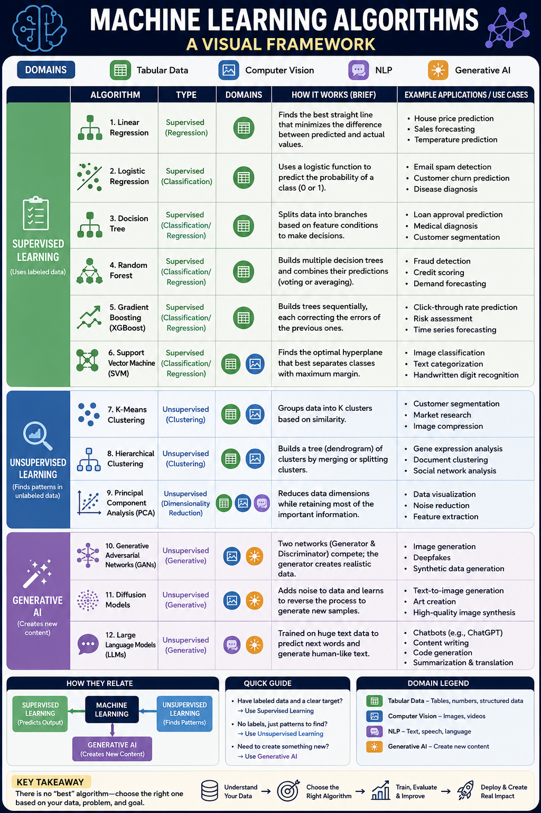

A Complete Structured Overview with Applications
Machine learning is a branch of artificial intelligence that enables systems to learn patterns from data and make predictions or decisions without being explicitly programmed. Depending on the type of data and the problem being solved, different algorithms are used. These algorithms are generally grouped into three major categories: Supervised Learning, Unsupervised Learning, and Deep Learning / Generative Models.
This article provides a structured explanation of the most commonly used machine learning algorithms across these categories, along with their applications in tabular data, computer vision, natural language processing (NLP), and generative AI.
Supervised learning algorithms learn from labeled data, meaning the input data already has correct outputs.
Unsupervised learning works with unlabeled data and discovers hidden patterns.
These models are inspired by neural networks and used for complex tasks like image recognition, language processing, and content generation.
A complete visual reference for machine learning algorithms created using ChatGpt

| Algorithm | Type | Domains | How It Works | Applications |
|---|---|---|---|---|
| Linear Regression | Supervised (Regression) | Tabular | Finds best-fit line | House price, Sales forecasting |
| Logistic Regression | Supervised (Classification) | Tabular, NLP | Outputs probabilities | Spam detection, Churn prediction |
| Decision Tree | Supervised (Classification/Regression) | Tabular | Splits data into branches | Loan approval, Medical diagnosis |
| Random Forest | Supervised (Classification/Regression) | Tabular | Ensemble of decision trees | Fraud detection, Credit scoring |
| Gradient Boosting (XGBoost) | Supervised (Classification/Regression) | Tabular | Sequential tree building | CTR prediction, Risk assessment |
| SVM | Supervised (Classification/Regression) | Tabular, CV, NLP | Finds optimal hyperplane | Image classification, Text categorization |
| K-Means | Unsupervised (Clustering) | Tabular | Groups data into K clusters | Customer segmentation, Image compression |
| Hierarchical Clustering | Unsupervised (Clustering) | Tabular | Builds cluster tree | Gene analysis, Document clustering |
| PCA | Unsupervised (Dim Reduction) | Tabular, CV | Reduces dimensions while preserving variance | Data visualization, Noise reduction |
| GANs | Generative | Gen AI, CV | Generator vs Discriminator | Image generation, Synthetic data |
| Diffusion Models | Generative | Gen AI | Noise-to-image refinement | Text-to-image, Art creation |
| Transformers (LLMs) | Generative | NLP, Gen AI | Attention mechanisms | Chatbots, Code generation, Summarization |
Machine learning is a diverse field where each algorithm has a specific strength depending on the type of data and problem. Understanding when and why to use each model is more important than memorizing them. Together, these algorithms form the foundation of modern AI systems used in industries like healthcare, finance, technology, and entertainment.
Key Takeaway: There is no "best" algorithm—choose the right one based on your data, problem, and goal.
Tabular Data: Tree-based models like Random Forest or XGBoost
Computer Vision: CNNs and vision transformers
NLP: Transformer-based architectures
Generative AI: Diffusion models and large language models